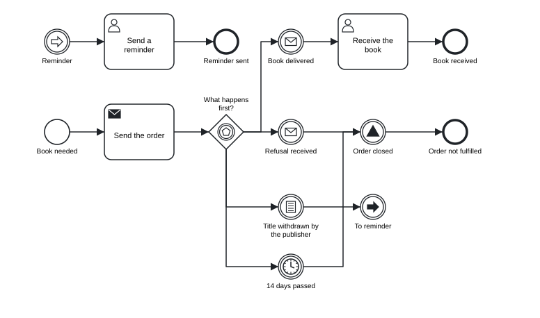
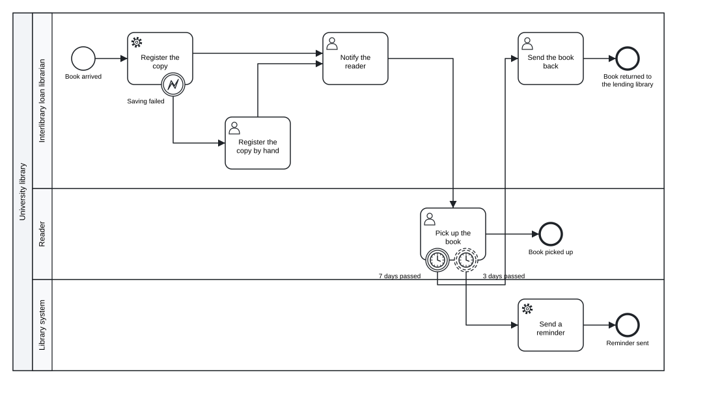
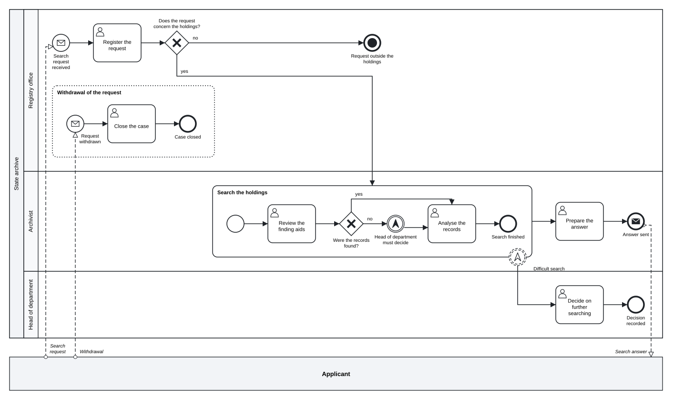
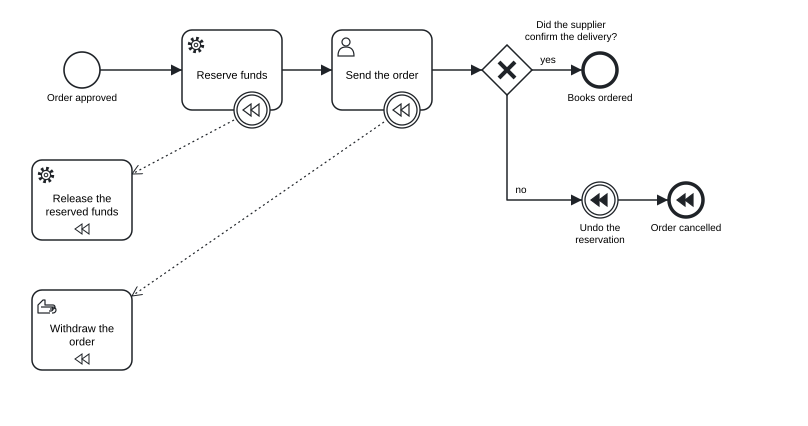
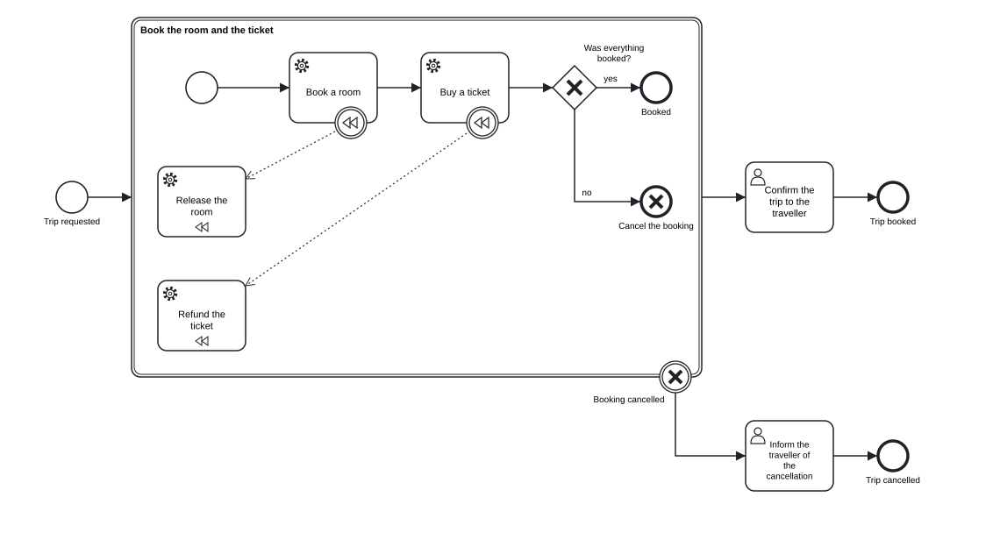
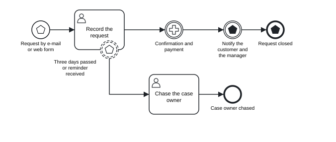
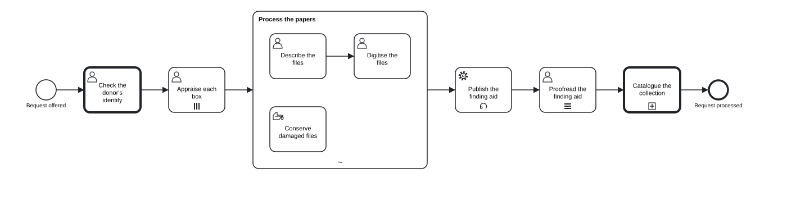

Chapter 5 Events, sub-processes and exceptions
In this chapter you will tell catching events from throwing events and know where each trigger may stand · write message, timer, conditional, signal, error, escalation, compensation, cancel, link, terminate, multiple and parallel multiple events · attach interrupting and non-interrupting boundary events to activities · group work in embedded sub-processes, event sub-processes, transactions and ad-hoc sub-processes · call other processes and global tasks · mark loops and multi-instance activities · undo completed work with compensation handlers
A process description written by the people who do the work usually covers the normal case: the request comes in, it is checked, it is answered. The interesting questions come afterwards. What happens if the reader never collects the book? If the registration system is down? If the applicant withdraws the request while the archivist is still searching? In BPMN these questions are answered with events: things that happen and either start, interrupt or redirect the work. This chapter covers every kind of event of BPMN 2.0.2 as tok writes it, and the containers that give events a scope: sub-processes, event sub-processes, transactions and ad-hoc sub-processes.
Chapter 3 introduced the five event keywords and the plain (none) events. Here they receive their triggers.
5.1 Catching and throwing
Every event either catches something or throws something. A catching event waits until its trigger happens: a message arrives, a time passes, a condition becomes true. A throwing event makes its trigger happen: it sends a message, raises an error, broadcasts a signal. In the diagram a catching event has a white symbol and a throwing event a black one.
The position of the event decides which of the two it is:
| Keyword | BPMN element | Catches or throws |
|---|---|---|
 start |
start event | catches: the trigger starts the process (or the sub-process) |
 catch |
intermediate catch event | catches: the token waits on the path until the trigger happens |
 boundary |
boundary event | catches: the trigger happens while the activity it is attached to is running |
") throw |
intermediate throw event | throws: the token passes through and the trigger happens |
 end |
end event | throws: the path ends and the trigger happens |
A trigger is an attribute of the event. message="Order" on a catch line waits for the message “Order”; the same attribute on a throw line sends it. Messages, signals, errors and escalations are declared implicitly by their name: two events that write signal="Order closed" refer to the same signal, and the BPMN export writes one signal element for both.
5.2 Triggers
The table lists every trigger and the positions where BPMN allows it. A trigger in a position the table does not allow is the error E010 (for example a timer on an end event, or any trigger on the start event of an embedded sub-process).
| Trigger | tok | Catching positions | Throwing positions |
|---|---|---|---|
| message | message="Name" |
start, catch, boundary | throw, end |
| timer | timer=VALUE |
start, catch, boundary | none |
| conditional | condition="FEEL" |
start, catch, boundary | none |
| signal | signal="Name" |
start, catch, boundary | throw, end |
| error | error="Name" |
boundary, start of an event sub-process | end |
| escalation | escalation="Name" |
boundary, start of an event sub-process | throw, end |
| compensation | compensate (flag) |
boundary | throw, end |
| cancel | cancel (flag) |
boundary of a transaction | end inside a transaction |
| link | link="Name" |
catch | throw |
| terminate | terminate (flag) |
none | end |
Message. A message is sent from one participant to another: a request, a letter, an e-mail, a reply from a supplier. A message event usually has a message flow from or to another pool (Chapter 4); in a model with several pools, a message event without a message flow is the warning W054.
Timer. A timer is a duration (P14D, PT2H), a date and time (2027-01-15T09:00) or a cycle (R3/PT1H, three times every hour). Chapter 3 has the table of ISO 8601 values. A value that contains a space must be quoted.
Conditional. condition="FEEL" waits until a condition over the data of the process becomes true: condition="status = \"withdrawn\"". The condition is written in FEEL without a leading = (Chapter 9 describes FEEL).
Signal. A signal is broadcast: every process that catches a signal of that name reacts to it, and the thrower does not know who listens. Use a signal for announcements (“the reading room is closed today”) and a message for communication with a known partner.
Error. An error ends the work of an activity because it cannot be completed: a record cannot be saved, a payment is refused. An error is thrown by an end event inside a sub-process and caught by a boundary event of that sub-process or by an event sub-process. A boundary error event on a task stands for a failure of the task itself. Both error= and escalation= accept a code="…", the code a process engine matches.
Escalation. An escalation tells someone higher up that something needs their attention, without necessarily stopping the work: a search is taking too long, a request needs the director’s decision. It can be thrown by an intermediate event, so the work continues after it.
Compensation, cancel. Compensation undoes completed work; cancellation ends a transaction. Both are described in their own sections below.
Link. A pair of link events is a “go to” inside one process: the throwing link event jumps to the catching link event with the same name. Links help to break a long diagram into parts, or to avoid long crossing lines. They have no meaning beyond the drawing.
Terminate. A terminate end event ends the whole process instance at once, including every other path that is still active.
5.2.1 Events on a path: waiting for a supplier
A library orders a book that is out of stock. After sending the order, it waits for whichever happens first: the book arrives, the supplier refuses, the publisher withdraws the title, or fourteen days pass.
tok 1.0 "Waiting for a supplier"
start needed "Book needed"
send order "Send the order" message="Order"
eventgw first "What happens first?"
catch delivered "Book delivered" message="Delivery"
catch refused "Refusal received" message="Refusal"
catch timeout "14 days passed" timer=P14D
catch withdrawn "Title withdrawn by the publisher" condition="status = \"withdrawn\""
user receive-book "Receive the book"
end done "Book received"
throw closed "Order closed" signal="Order closed"
end not-delivered "Order not fulfilled"
throw to-reminder "To reminder" link="Reminder"
catch reminder "Reminder" link="Reminder"
user send-reminder "Send a reminder"
end reminded "Reminder sent"
flow needed -> order -> first
flow first -> delivered
flow first -> refused
flow first -> timeout
flow first -> withdrawn
flow delivered -> receive-book -> done
flow refused -> closed -> not-delivered
flow withdrawn -> closed
flow timeout -> to-reminder
flow reminder -> send-reminder -> reminded
Figure 5.1: Catching events after an event-based gateway, a signal throw event and a pair of link events.
Download the model (.tok) Download the BPMN export (.bpmn)
The event-based gateway first is followed by four catching events: two message events, a conditional event and a timer event. The first of them to happen decides the path, and the others are no longer awaited. Both negative outcomes pass the signal throw event “Order closed”, which announces the closure to anyone who listens (for example the acquisitions statistics). The timeout does not draw a long line back across the diagram: it jumps through the link events “To reminder” and “Reminder” to a separate part of the diagram. The catching link event has no incoming sequence flow; the link is its incoming path.
5.2.2 Triggers without a value
In an early draft you may know that a step waits for a message without knowing which one. The trigger keys message, timer, signal, condition, error and escalation may be written as flags without a value: catch reply "Reply or timeout" message timer. The event gets the event definition without a reference, as graphical BPMN tools draw it when the details are not filled in yet. Such an event is valid; a message event without a message is the note L010, a reminder to complete the model. On boundary events and on the start events of event sub-processes the flags error and escalation have a precise meaning: they catch every error or escalation, whatever its name.
5.3 Boundary events
Many exceptions happen during an activity: while the reader has not yet collected the book, the deadline passes; while the system records the copy, the database fails. A boundary event is attached to the activity with on=ID and catches its trigger only while that activity is running:
boundary seven-days "7 days passed" on=pickup timer=P7DA boundary event is interrupting by default: when its trigger happens, the activity is cancelled and the process continues along the outgoing flow of the boundary event. With the flag noninterrupting the activity keeps running, and the boundary event starts an additional path in parallel. The diagram draws a non-interrupting boundary event with a dashed circle.
| Boundary trigger | Interrupting | Non-interrupting |
|---|---|---|
| message, timer, conditional, signal, escalation | yes | yes |
| error | yes | no: an error always interrupts (E012) |
| cancel | yes (only on a transaction) | no: always interrupts (R060) |
| compensation | not a path: it connects the activity with its compensation handler |
A boundary event needs on= (R032), the activity must exist (R002) and must be an activity, not a gateway or an event (R003). A boundary event has no incoming sequence flow: its only “incoming path” is the activity.
The following model shows a reader picking up a book that arrived through interlibrary loan. Three boundary events cover three exceptions.
tok 1.0 "Picking up an interlibrary loan"
pool library "University library"
lane librarian "Interlibrary loan librarian"
start arrived "Book arrived"
service register "Register the copy"
boundary save-failed "Saving failed" on=register error="Saving failed"
user register-by-hand "Register the copy by hand"
user notify "Notify the reader"
user send-back "Send the book back"
end returned "Book returned to the lending library"
lane reader "Reader"
user pickup "Pick up the book"
boundary three-days "3 days passed" noninterrupting on=pickup timer=P3D
boundary seven-days "7 days passed" on=pickup timer=P7D
end picked-up "Book picked up"
lane system "Library system"
service remind "Send a reminder"
end reminded "Reminder sent"
flow arrived -> register -> notify -> pickup -> picked-up
flow save-failed -> register-by-hand -> notify
flow three-days -> remind -> reminded
flow seven-days -> send-back -> returned
Figure 5.2: An error boundary event and two timer boundary events, one of them non-interrupting.
Download the model (.tok) Download the BPMN export (.bpmn)
save-failedis an error boundary event on the service task “Register the copy”. If the system cannot save the record, the task is abandoned and the librarian registers the copy by hand; both paths meet again at “Notify the reader”.three-daysis a non-interrupting timer. After three days the system sends a reminder, but the reader can still pick up the book: the task “Pick up the book” continues.seven-daysis an interrupting timer. After seven days the pick-up is cancelled and the book is sent back to the lending library.
Two timers on one task, one non-interrupting and one interrupting, are a common pattern: a reminder first, a deadline later. Note what the model says precisely: the reminder is sent once, after three days. A reminder every three days would be the cycle timer=R/P3D.
5.4 Embedded sub-processes
A sub-process (sub) groups activities that belong together into one activity of the parent process. It has its own block, with its own start event, end events and sequence flows:
sub search "Search the holdings"
start search-start
user finding-aids "Review the finding aids"
...The block of a sub-process is a separate scope for sequence flows. A flow cannot cross its border: a flow from a node inside the sub-process to a node outside it is the error R021. The parent process enters the sub-process through its incoming flow, the inner start event begins, and when every inner path has reached an end event the sub-process completes and the parent continues along its outgoing flow. The start event of an embedded sub-process has no trigger (E010); the sub-process starts when the token arrives.
The flows of a sub-process may be written in its block or at the top level; the canonical form prints them with the other sequence flows after the pools, because the identifiers alone say where each flow belongs.
A sub-process is useful for three reasons. It gives the diagram a level of detail that can be read separately from the whole. It is a scope for boundary events: a timer on the sub-process limits the duration of all its work together, and an error thrown anywhere inside it can be caught on its border. And it is a scope for event sub-processes and data.
5.4.1 Escalation from a sub-process
The search of an archive for a reader’s request is a sub-process. Sometimes the archivist cannot decide alone whether the search should continue, and the head of department has to decide. The archivist does not stop working: the escalation is thrown inside the sub-process, caught by a non-interrupting boundary event on its border, and the head’s decision runs in parallel with the search.
tok 1.0 "Archival search with a sub-process"
pool archive "State archive"
lane registry "Registry office"
start request "Search request received" message="Search request"
user register "Register the request"
xor in-scope "Does the request concern the holdings?"
end out-of-scope "Request outside the holdings" terminate
eventsub withdrawal "Withdrawal of the request"
start withdrawn "Request withdrawn" message="Withdrawal"
user close "Close the case"
end closed "Case closed"
lane archivist "Archivist"
sub search "Search the holdings"
start search-start
user finding-aids "Review the finding aids"
xor found "Were the records found?"
throw difficult "Head of department must decide" escalation="Difficult search"
user analyse "Analyse the records"
end search-end "Search finished"
boundary escalated "Difficult search" noninterrupting on=search escalation="Difficult search"
user answer "Prepare the answer"
end answered "Answer sent" message="Search answer"
lane head "Head of department"
user decide "Decide on further searching"
end decided "Decision recorded"
pool applicant "Applicant"
flow withdrawn -> close -> closed
flow search-start -> finding-aids -> found
flow found -> analyse "yes"
flow found -> difficult "no"
flow difficult -> analyse -> search-end
flow request -> register -> in-scope
flow in-scope -> search "yes"
flow in-scope -> out-of-scope "no"
flow search -> answer -> answered
flow escalated -> decide -> decided
message applicant -> request "Search request"
message answered -> applicant "Search answer"
message applicant -> withdrawn "Withdrawal"
Figure 5.3: An escalation thrown inside a sub-process and caught on its border, an event sub-process and a terminate end event.
Download the model (.tok) Download the BPMN export (.bpmn)
The throw event difficult and the boundary event escalated name the same escalation, “Difficult search”. If nothing inside the sub-process throws the escalation or error that a boundary event of the sub-process catches, tok check reports the warning W052; an escalation that is thrown and caught nowhere is the warning W053. Both usually mean a typing error in the name.
The model also shows a terminate end event: a request outside the holdings ends the whole case at once.
5.5 Event sub-processes
An event sub-process (eventsub) is a sub-process that is not on the path of the process. It has no incoming or outgoing sequence flows, and its block begins with exactly one start event with a trigger. It runs when that trigger happens while the enclosing process (or sub-process) is active. In the archive model, the event sub-process “Withdrawal of the request” runs when the applicant withdraws the request:
eventsub withdrawal "Withdrawal of the request"
start withdrawn "Request withdrawn" message="Withdrawal"
user close "Close the case"
end closed "Case closed"The start event of an event sub-process may be interrupting (the default) or noninterrupting. An interrupting start cancels everything else in the enclosing scope: when the request is withdrawn, the search stops and only the closing of the case remains. A non-interrupting start runs the event sub-process alongside the normal work, for example a change of address that has to be recorded while the case continues. The diagram draws an event sub-process with a dotted border, and a non-interrupting start event with a dashed circle.
Its start event may have a message, timer, conditional, signal, error or escalation trigger. An error start event, such as start failure "Any error" error, handles an error thrown inside the enclosing scope: it is an alternative to a boundary error event that keeps the handling inside the scope. An event sub-process with a sequence flow to or from it, or without a triggered start event, is the error E013.
| Construct | Where it is | When it runs |
|---|---|---|
| boundary event on a sub-process | on the border of the sub-process | its trigger happens while the sub-process runs; the handling continues outside |
| event sub-process | inside the process or sub-process it belongs to | its trigger happens while that scope runs; the handling stays inside |
5.6 Compensation
Some completed work cannot simply be cancelled: a reservation of funds has already been made, an order has already been sent. When the process later decides that the work must be undone, BPMN compensates it: it runs, for each completed activity, a compensation handler that reverses its effect.
In tok, an activity names its handler with compensate=HANDLER, and the handler carries the flag compensation:
service reserve "Reserve funds" compensate=release
service release "Release the reserved funds" compensationThe export attaches a compensation boundary event to reserve and connects it with release by an association. The handler has no sequence flows (R051); it is not a step of the normal path, it is called only by compensation. If you want to give the boundary event a label or documentation, declare it yourself with boundary ID "Label" on=ACTIVITY compensate; the export then uses that event.
Compensation is triggered by a throwing compensation event:
throw ID "Label" compensateorend ID "Label" compensatecompensates every completed activity of the scope that has a handler, the latest completed first;- with
activity=IDit compensates only that activity.
tok 1.0 "Ordering books from a supplier"
start s "Order approved"
service reserve "Reserve funds" compensate=release
service release "Release the reserved funds" compensation
user send-order "Send the order" compensate=withdraw
manual withdraw "Withdraw the order" compensation
xor confirmed "Did the supplier confirm the delivery?"
end ordered "Books ordered"
throw undo-funds "Undo the reservation" compensate activity=reserve
end cancelled "Order cancelled" compensate
flow s -> reserve -> send-order -> confirmed
flow confirmed -> ordered "yes"
flow confirmed -> undo-funds "no"
flow undo-funds -> cancelled
Figure 5.4: Two compensation handlers, a throw event that compensates one activity and an end event that compensates the rest.
Download the model (.tok) Download the BPMN export (.bpmn)
If the supplier does not confirm the delivery, the throw event undo-funds first compensates only reserve (activity=reserve): the funds are released. The end event cancelled then compensates whatever else has completed and has a handler, here the sending of the order, which is withdrawn by its manual handler. Compensation runs only for activities that have completed; an activity that never ran has nothing to undo.
5.7 Transactions and cancellation
A transaction is a sub-process whose activities succeed or fail together. If the transaction is cancelled, its completed activities are compensated, and the process continues from the cancel boundary event of the transaction:
| tok | BPMN |
|---|---|
transaction ID "Label" with a block |
a transaction: a sub-process with a double border |
method=compensate\|store\|image |
the transaction method (written only when given; compensate is the BPMN default) |
end ID "Label" cancel |
a cancel end event, only directly inside a transaction (R060) |
boundary ID "Label" on=TRANSACTION cancel |
a cancel boundary event, only on a transaction, always interrupting (R060) |
Booking a study trip shows the pattern. The room and the ticket are booked together; if one of them fails, both bookings are reversed.
tok 1.0 "Booking a study trip"
start requested "Trip requested"
transaction booking "Book the room and the ticket"
start booking-start
service room "Book a room" compensate=release-room
service release-room "Release the room" compensation
service ticket "Buy a ticket" compensate=refund-ticket
service refund-ticket "Refund the ticket" compensation
xor booked "Was everything booked?"
end booked-end "Booked"
end cancel-end "Cancel the booking" cancel
boundary cancelled "Booking cancelled" cancel on=booking
user confirm "Confirm the trip to the traveller"
user inform "Inform the traveller of the cancellation"
end trip-booked "Trip booked"
end trip-cancelled "Trip cancelled"
flow booking-start -> room -> ticket -> booked
flow booked -> booked-end "yes"
flow booked -> cancel-end "no"
flow requested -> booking -> confirm -> trip-booked
flow cancelled -> inform -> trip-cancelled
Figure 5.5: A transaction with compensation handlers, a cancel end event and a cancel boundary event.
Download the model (.tok) Download the BPMN export (.bpmn)
When the token reaches the cancel end event cancel-end, three things happen in order. The transaction stops. Its completed activities are compensated through their handlers, the latest completed first: the ticket is refunded, then the room released. Finally the process continues from the cancel boundary event cancelled, so the traveller is informed. When the transaction completes normally, through booked-end, the process continues along its ordinary outgoing flow to “Confirm the trip”.
5.8 Multiple and parallel multiple events
An event may have more than one trigger. On a catching event, several triggers mean “any one of them”: the event happens when the first of them happens. On a throwing event, all triggers happen. BPMN calls such an event a multiple event and draws it with a pentagon. A trigger key may be repeated for this purpose, and different keys may be combined:
tok 1.0 "Handling a service request"
start request "Request by e-mail or web form" message="E-mail" message="Web form"
user record "Record the request"
boundary nudge "Three days passed or reminder received" noninterrupting on=record timer=P3D signal="Reminder"
user chase "Chase the case owner"
end chased "Case owner chased"
catch confirmed "Confirmation and payment" parallel message="Confirmation" signal="Payment"
throw announce "Notify the customer and the manager" message="To customer" signal="Case confirmed"
end closed "Request closed" message="Closing note" signal="Request closed"
flow request -> record -> confirmed -> announce -> closed
flow nudge -> chase -> chased
Figure 5.6: Multiple start, boundary and end events, a parallel multiple catch event and a multiple throw event.
Download the model (.tok) Download the BPMN export (.bpmn)
- The start event
requeststarts the process when an e-mail or a web form arrives. - The non-interrupting boundary event
nudgefires after three days or when the signal “Reminder” arrives, whichever comes first. - The catch event
confirmedhas the flagparallel: it waits until both the confirmation and the payment have arrived. BPMN calls this a parallel multiple event and draws it with a plus sign.parallelneeds a catching event with two or more triggers (R062). - The throw event
announceand the end eventclosedthrow all their triggers.
The triggers terminate, compensation, cancel and link cannot be combined with any other trigger (R062). Only events take several triggers: a trigger key repeated on another flow node, such as message= written twice on a send task, is also R062. Any other key or flag written twice on one line is the deprecation warning R090 in a 1.0 document, and only its last value counts.
5.9 Ad-hoc sub-processes
Some work has no fixed order. Processing a bequest of papers involves describing, digitising and conserving files, but which of these is done first, and how often, is decided by the archivist case by case. An ad-hoc sub-process (adhoc) contains activities that can be performed in any order and as often as needed:
adhoc processing "Process the papers"
user describe "Describe the files"
user digitise "Digitise the files"
manual conserve "Conserve damaged files"
flow describe -> digitiseAn ad-hoc sub-process contains at least one activity and no start or end events (R050). Flows between inner activities are allowed and express a constraint: here, a file is digitised after it is described. The flag sequential says that only one activity runs at a time (the BPMN ordering is then sequential instead of parallel). The diagram marks an ad-hoc sub-process with a tilde. The attributes that tell a process engine which activities to activate and when the sub-process is complete (active=, until=, wait) belong to the executable layer of Chapter 10.
5.10 Call activities and global tasks
A call activity (call) runs something defined elsewhere, so that a procedure used in several processes is modelled once:
call ID "Label" process=IDcalls a process, usually defined in another file. The diagram draws it with a thick border and a+marker.call ID "Label" task=IDcalls a global task, a task declared once at the top level of the document withglobal:
global identity-check "Check the donor's identity" kind=user
call check-donor "Check the donor's identity" task=identity-checkkind= is task (default), user, manual, script or rule; it gives the BPMN element (globalUserTask and so on) and the icon of the call activity. A call activity has either process= or task=, not both (R065); a task= that names no global is R066. The bindings of a called process for Camunda 8 (binding=, version=, variable propagation) are described in Chapter 10.
5.11 Loops and multi-instance
Chapter 3 introduced three markers of repetition. Their full form describes how the repetition works.
A standard loop repeats an activity while a condition holds:
service publish "Publish the finding aid" loop test-before while="not(published)" loop-max=3| tok | BPMN | Meaning |
|---|---|---|
loop |
standardLoopCharacteristics |
the activity repeats |
while="FEEL" |
loopCondition |
it repeats while the condition is true |
test-before |
testBefore="true" |
the condition is tested before each iteration, so the activity may not run at all; by default it is tested after, so the activity runs at least once |
loop-max=N |
loopMaximum |
at most N iterations |
while=, test-before and loop-max= require loop, and loop-max is a whole number (R061).
A multi-instance activity runs once for each element of a collection: once per box of a bequest, once per reviewer of a manuscript. parallel runs the instances at the same time (three vertical bars), sequential one after another (three horizontal bars). Which collection the instances work through, and when the activity is complete, are attributes of the executable layer (collection=, item=, output=, until=; Chapter 10). The markers apply to tasks, sub-processes and call activities alike.
The bequest process combines most of the constructs of the last three sections:
tok 1.0 "Processing a bequest of papers"
global identity-check "Check the donor's identity" kind=user
start received "Bequest offered"
call check-donor "Check the donor's identity" task=identity-check
user appraise "Appraise each box" parallel
adhoc processing "Process the papers"
user describe "Describe the files"
user digitise "Digitise the files"
manual conserve "Conserve damaged files"
service publish "Publish the finding aid" loop test-before while="not(published)" loop-max=3
user proofread "Proofread the finding aid" sequential
call catalogue "Catalogue the collection" process=cataloguing
end done "Bequest processed"
flow describe -> digitise
flow received -> check-donor -> appraise -> processing -> publish -> proofread -> catalogue -> done
Figure 5.7: A call activity of a global user task, a parallel multi-instance task, an ad-hoc sub-process, a standard loop, a sequential multi-instance task and a call activity of a process.
Download the model (.tok) Download the BPMN export (.bpmn)
Each box of the bequest is appraised (parallel multi-instance); the papers are then processed in an ad-hoc sub-process; publishing the finding aid is attempted until it succeeds, at most three times; it is proofread section by section (sequential multi-instance); and cataloguing, a procedure of its own, is called as a separate process.
5.12 Exceptions and process engines
Everything in this chapter is BPMN 2.0.2, and every BPMN tool that supports the full notation reads it. A process engine may support less. Camunda 8 does not execute transactions, cancel events, multiple and parallel multiple events, standard loops with while=, test-before or loop-max=, instantiating receive tasks and event-based gateways, or calls of global tasks. In a document marked executable for Camunda, tok check reports each of them with a code from C100 to C108, so that a model meant for execution does not rely on what the engine cannot run. Descriptive and analytic models are not affected. Chapter 10 lists the codes, and Chapter 7 explains how to check a model against the conformance classes of BPMN.
The levels of tok check follow the same line: boundary events, sub-processes and the triggers of BPMN’s analytic class pass at the level analytic, while transactions, multiple events, the loop attributes and global tasks need the level full.
5.13 Typical mistakes
The following model of returning a damaged book contains several mistakes with events and handlers.
tok 1.0 "Returning a damaged book"
start returned "Book returned"
user inspect "Inspect the book"
boundary too-long "2 days passed" timer=P2D
service charge "Charge the reader" compensate=refund
service refund "Refund the charge"
eventsub dispute "Reader disputes the charge"
start disputed "Dispute received"
user review "Review the dispute"
end reviewed "Dispute reviewed"
end done "Return closed"
end cancelled "Return cancelled" cancel
flow returned -> inspect -> charge -> done
flow too-long -> cancelled
flow charge -> refund
flow disputed -> review -> reviewedtok check 05-exceptions-error.tok
05-exceptions-error.tok:5: error R032: boundary event 'too-long' needs on=ACTIVITY
05-exceptions-error.tok:6: error R051: compensation handler 'refund' needs the flag compensation
05-exceptions-error.tok:13: error R060: cancel end event 'cancelled' must be inside a transaction
05-exceptions-error.tok: 3 error(s), 0 warning(s), 0 note(s)| Code | Problem | Correction |
|---|---|---|
R032 |
the boundary event does not say which activity it is attached to | add on=inspect |
R051 |
the handler named by compensate= lacks the flag, and it also has a sequence flow |
add compensation to refund and remove the flow charge -> refund |
R060 |
a cancel end event outside a transaction | a plain end event is enough here: remove cancel |
After these corrections, tok check reaches the BPMN rules and reports one more error, E013: the start event of the event sub-process has no trigger. Errors of the BPMN layer appear only when the tok layer is clean; Chapter 7 explains this order.
Exercises
Exercise 5.1
- Fix the returned book. Download
05-exceptions-error.tokand correct it untiltok checkreports no errors and no warnings. The dispute arrives as a message from the reader: give the start event of the event sub-process the right trigger. Download the model with errors (.tok) - Deadlines on a task. An editor reviews a manuscript. After 10 days the system reminds the editor (the review continues); after 30 days the manuscript goes to another editor (the review stops). Model both deadlines with boundary events and draw the diagram. Then change the reminder so that it repeats every 10 days.
- Error or escalation? For each situation, decide whether it is an error or an escalation, whether it interrupts, and where it is caught: (a) the digitisation scanner breaks down in the middle of a sub-process “Digitise the volume”; (b) a cataloguer finds a rare item that the head of collections must see, but cataloguing continues; (c) the payment gateway refuses a fee payment. Write the events in tok.
- An event sub-process. Extend the archive search of this chapter with a non-interrupting event sub-process: when the applicant sends additional information (a message), the registry office adds it to the case file while the search continues. Check that the new message has a message flow from the applicant.
- A transaction. A conference registration books a seat in a session and charges the fee. If the charge fails, the seat is released and the participant is told. Model it as a transaction with compensation handlers and a cancel boundary event, and check it with
--level analyticand--level full. Explain the difference. - Multiple triggers. A process starts when a request arrives by post, by e-mail or at the desk. Write it once with three start events and once with one multiple start event. Which version would you show to the staff, and which to a process engine that does not execute multiple events?